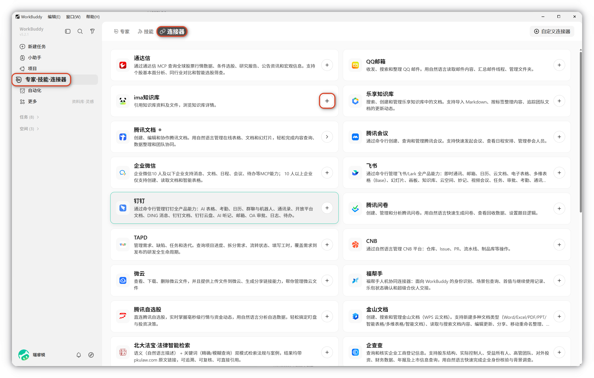
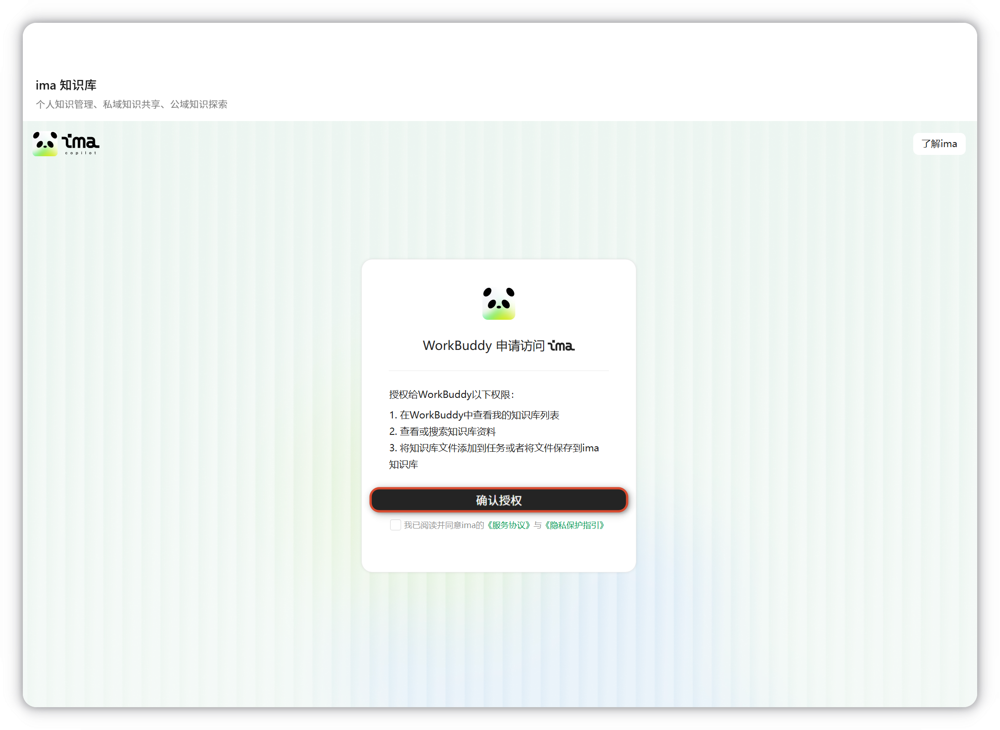
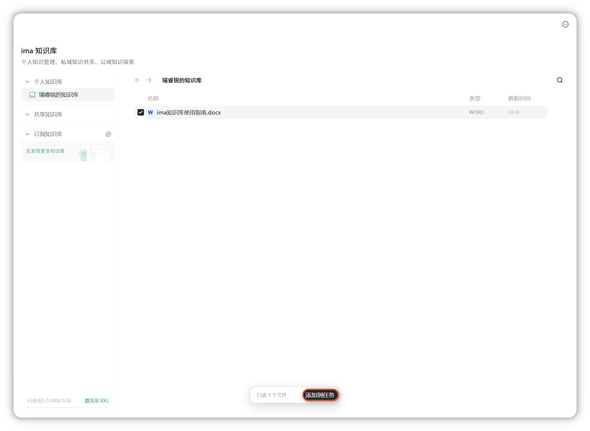
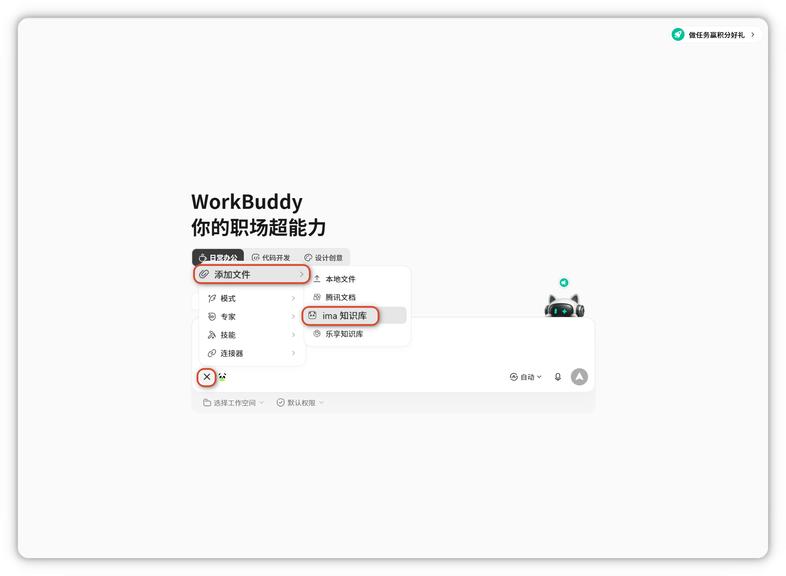
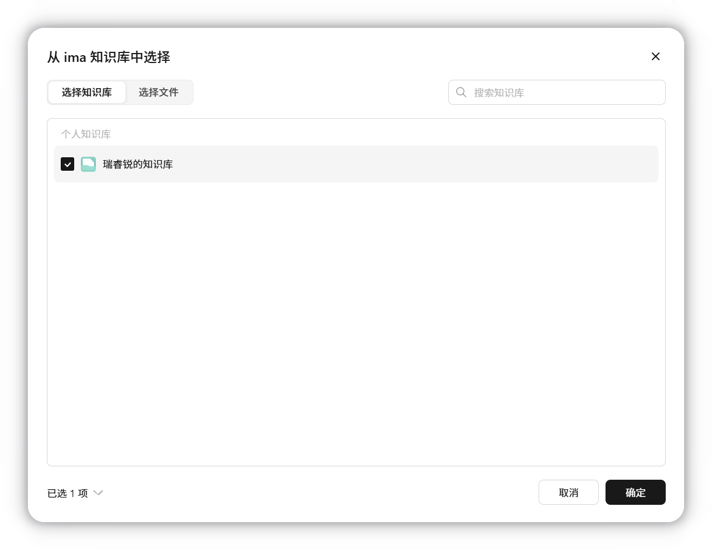
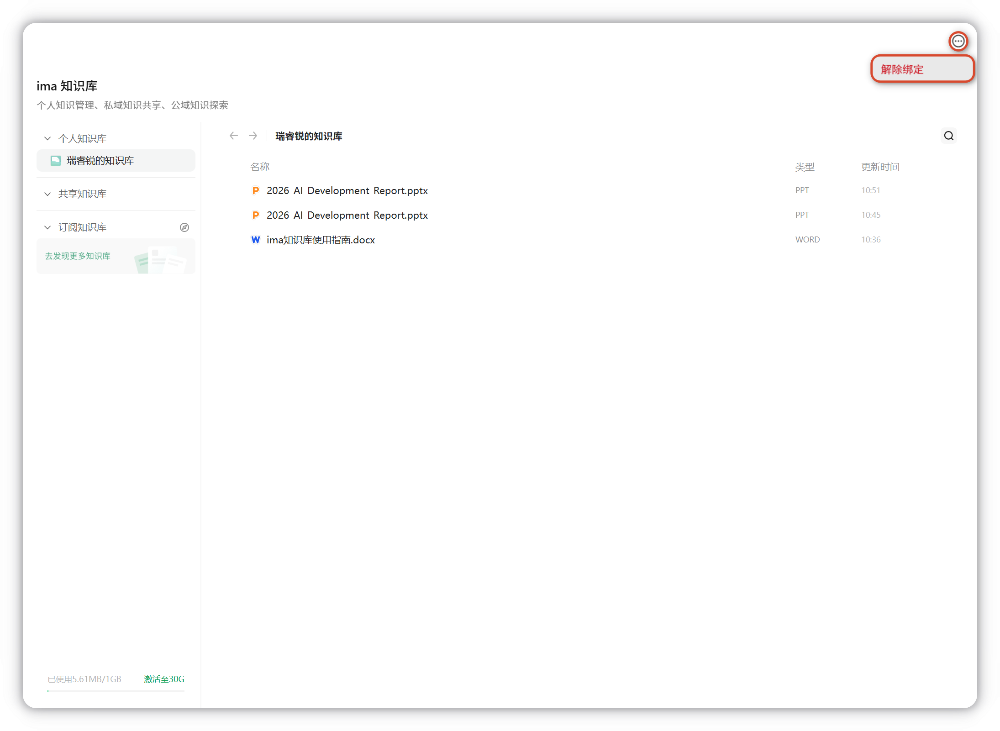

WorkBuddy × ima 功能指引
WorkBuddy 是腾讯推出的全场景职场 AI 智能体桌面工作台，面向各类职能角色设计。您只需用一句话描述需求，WorkBuddy 便能像同事一样自主规划和执行任务，并交付可验收的结果。
ima 知识库是"搜、读、写"一体的 AI 知识工作台，以个人知识库为核心，提供智能问答与内容生成能力。
WorkBuddy 接入后可直接检索并引用 ima 中的个人 / 共享 / 订阅知识库。
本篇教程将带你学习 WorkBuddy × ima 的基础操作。
一、连接
- 在左侧边栏点击资料库，选择 ima 知识库。

- 点击立即前往授权后使用微信扫码登录 ima 知识库，再次确认授权后 WorkBuddy 将获得以下权限：

- 在 WorkBuddy 中查看我的知识库列表。
- 查看或搜索知识库资料。
- 将知识库文件添加到任务或者将文件保存到 ima 知识库。
TIP
WorkBuddy 连接资料库的 ima 知识库后将获得登录用户的 ima 知识库的权限，详细授权信息见上方内容。
二、使用
任务引用知识库文件
在任务中引用 ima 知识库内容的方式有两种：
a. 从资料库添加： 在资料库 - ima 知识库中选中对应文件，点击添加到任务。

b. 在对话框添加： 在新建任务的输入框上方上传文件图标处打开 ima 知识库，支持勾选整个知识库或选择文件，点击确定添加到对话。


产物存回 ima 知识库
在右侧产物中找到需要的文件，点击上传到云端，选择 ima 知识库储存。保存到 ima 知识库支持按 个人 / 共享 / 订阅 三类知识库储存。

三、解除绑定
如果需要换绑账号或关闭连接，可以点击 ima 知识库，在右上角点击解除绑定。
